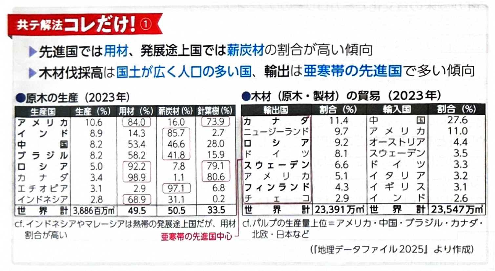
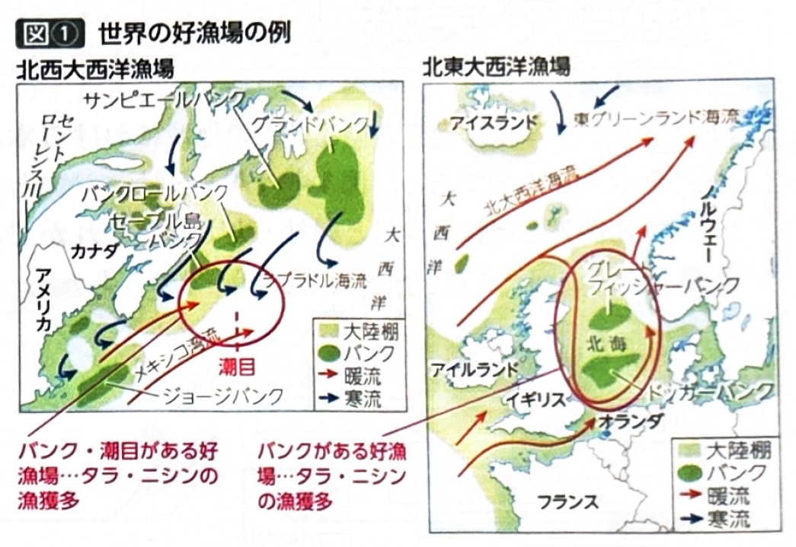
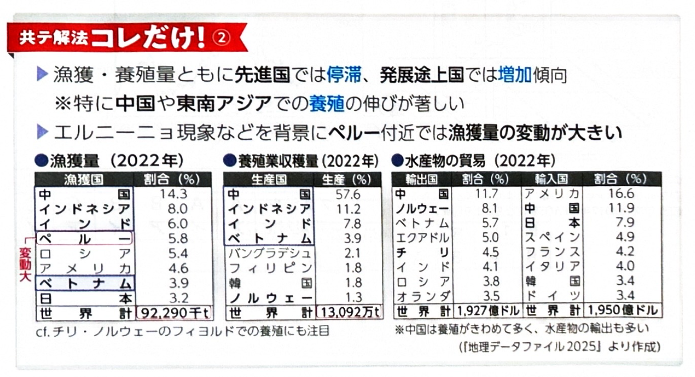

第3章 農林水産業 - 林業・水産業
ポイント総復習
1. 世界の林業と木材の用途
世界の林業は、木材の「用途」において先進国と発展途上国で大きな違いがあります。
| 地域 | 主な木材の用途 | 生産と貿易の特徴 |
|---|---|---|
| 発展途上国 | 薪炭材（燃料用） | インドやブラジルなどでは、森林面積が広く木材伐採高自体は多いが、自国内で燃料として消費してしまうため、輸出量は多くない。 |
| 先進国 | 用材（建築・製紙などの加工用） | 広大な森林を持ち、商業伐採が盛んなカナダやロシアが世界の主要な木材輸出大国となっている。 |
2. 森林の種類と商業伐採のしやすさ
気候帯によって育つ樹木の種類が異なり、これが林業の「やりやすさ」に直結します。
- 熱帯林：多種多様な広葉樹（硬木）が密林を形成しているため、特定の木だけを探して伐採・搬出することが難しく、商業伐採には不向きです。（※ただし、ラワンやチークなど有用な樹種もある）
- 亜寒帯林（冷帯林）：少数の種類の針葉樹（軟木）が広範囲に集まって生える「純林（じゅんりん）」を形成しているため、大規模な機械による一斉伐採がしやすく、商業伐採に非常に適しています。

3. 近年の水産業と養殖業
近年、世界の水産業は天然の魚を獲る「漁獲量」が頭打ちになる一方で、「養殖業」が急成長しています。
- 養殖業の急増：中国やインド、東南アジアなどで養殖業生産量が著しく増加しており、現在では世界全体の漁獲量を養殖業生産量が上回っています。
- 主な養殖の例：中国での内水面（河川・湖）におけるウナギやコイ、インドネシアやベトナム沿岸部でのエビ養殖など。また、ノルウェーやチリでは、波の穏やかなフィヨルドの地形を活かしたサケ（サーモン）の養殖が盛んです。

4. 世界の好漁場とペルー沖の特徴
魚が多く集まる好漁場には、地形や海流の条件があります。
- 好漁場の条件：水深が浅く太陽光が届きやすい大陸棚（水深約200m未満）やバンク（堆）、暖流と寒流がぶつかりプランクトンが豊富になる潮目（潮境）は好漁場となります。
【特異な好漁場：ペルー沖】
- 南米西岸のペルー沖では、ペルー海流（寒流）による湧昇流（深海からの湧き上がり）が豊富な栄養分をもたらし、アンチョビ（カタクチイワシの一種）の漁獲量が世界有数となっています。
- アンチョビの多くは、家畜の飼料や肥料用の魚粉（フィッシュミール）に加工され輸出されます。
- ただし、エルニーニョ現象が発生すると湧昇流が弱まり、プランクトンが減少するため、アンチョビは大不漁となります。

基礎問題（理解度チェック）
Q1. 世界の林業と木材の用途について、空欄を埋めなさい。
木材の用途として、発展途上国では燃料用の
の割合が高く、先進国では建築・製紙加工用の
の割合が高い。インドやブラジルは木材の伐採高は多いが、自国消費が多いため輸出量は多くない。世界の木材輸出量が多いのは、広大な森林を持つ
などの国々である。
Q2. 熱帯林の広葉樹は同種の樹木が密集して生える「純林」を形成しやすいため、大型機械による商業的な伐採に非常に適しているが、亜寒帯林の針葉樹は多種多様な樹木が混在しているため商業伐採には不向きである。
Q3. 近年の水産業について、空欄を埋めなさい。
近年の世界の水産業は、中国や東南アジアを中心とする
の生産量の伸びが著しく、現在では世界全体の漁獲量を上回っている。また、ノルウェーやチリなどでは、氷河によって削られた波の穏やかな
の地形を利用して、サケ（サーモン）などの養殖が盛んに行われている。
Q4. ペルー沖の漁業について、空欄を埋めなさい。
南米西岸のペルー沖では、寒流のペルー海流による
が豊富な栄養分をもたらすため、
の漁獲量が非常に多い。これらは主に飼料や肥料用の
に加工され輸出されるが、
の発生時には水温が上がりプランクトンが減少するため大不漁となる。
Q5. 魚が多く集まる好漁場の条件として、水深の浅い「大陸棚」や「バンク（堆）」のほか、暖流と寒流がぶつかってプランクトンが豊富になる「潮目（潮境）」などが挙げられる。